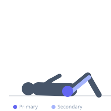
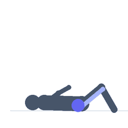

Exercise guide / Figure-Four Stretch
Figure-Four Stretch
The figure-four stretch is a supine alternative to pigeon pose that stretches the hip external rotators and gluteus maximus without the knee torque risk. Lying on the back with one ankle crossed over the opposite knee creates a 'figure four' shape, and pressing the thigh away provides a gentle but effective stretch for the piriformis and deep hip rotators. It is suitable for a wide population including those with knee sensitivity.
Primary muscles
gluteus maximus
gluteus medius
Secondary muscles
adductor magnus
Equipment
No Equipment (Bodyweight)


Starting position
- Lie on your back with knees bent and feet flat on the floor.
Setup
- Use a mat for comfort. No equipment needed.
Steps
- Step 1: Lie on your back with knees bent, feet flat on the floor.
- Step 2: Cross the left ankle over the right knee, creating a figure-four shape with the legs.
- Step 3: Flex the left foot to protect the knee joint.
- Step 4: Reach through or around the legs and grasp the right thigh, drawing it toward the chest.
- Step 5: Hold 30–90 seconds, then switch sides.
Coaching cues
- Push the crossed knee away from your chest to deepen the stretch
- Keep your foot flexed — this protects your knee
- Let gravity help you — relax into the floor
Breathing
- Breathe slowly throughout. Each exhale allows greater relaxation into the stretch.
Range of motion
- Draw the bottom thigh toward the chest until a stretch is felt in the outer hip of the crossed leg.
Tempo
- Hold 30–90 seconds. 2–4 rounds per side.
Common mistakes
- Dropping the foot — keep the top ankle flexed to protect the knee
- Pulling the bottom leg too aggressively — a gentle pull is sufficient
- Holding the breath, which creates tension and reduces stretch effectiveness
Safety
- Flex the foot of the crossed leg to maintain a neutral ankle and reduce knee stress
- If the stretch is felt in the knee rather than the hip, adjust ankle position
Training
- mobility: 2–4 reps
- mobility: 1–2 sets
- Rest: {'mobility': 10}